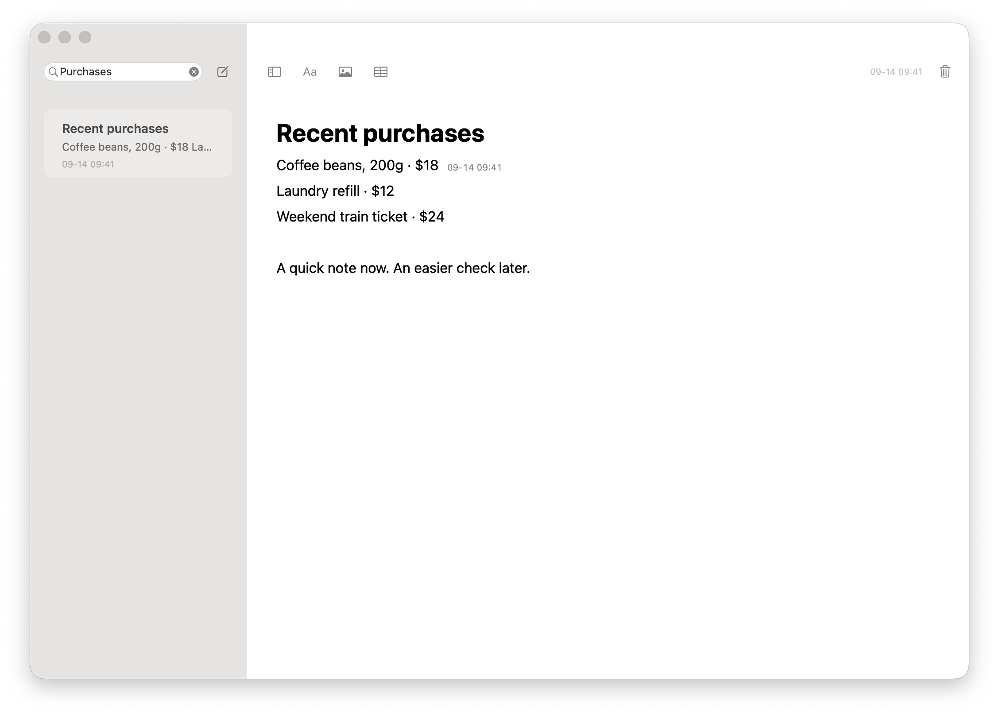
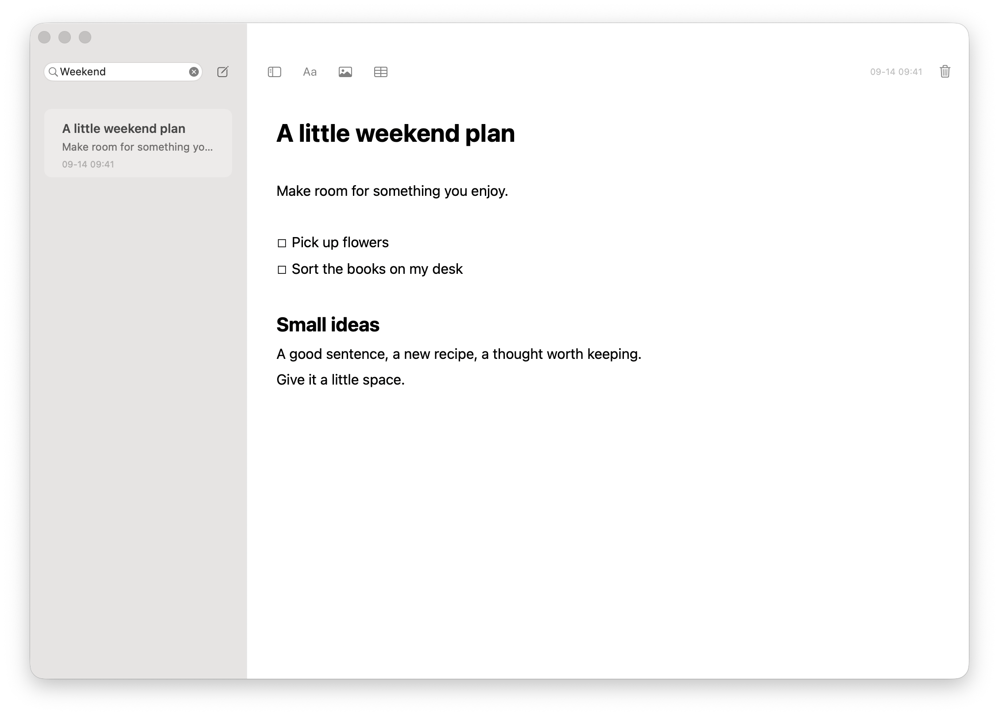
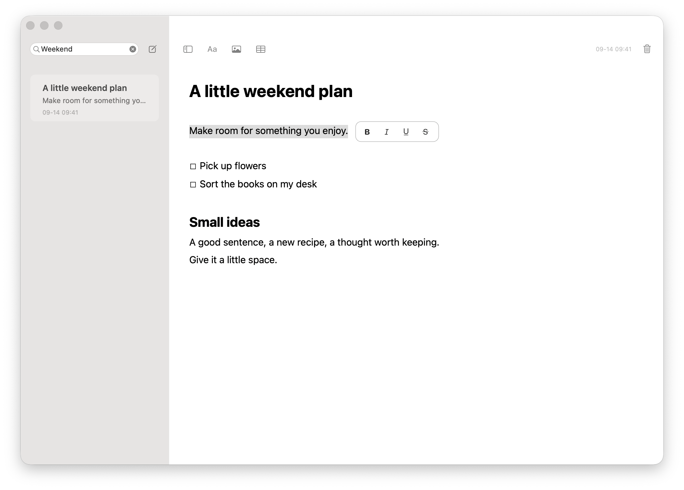
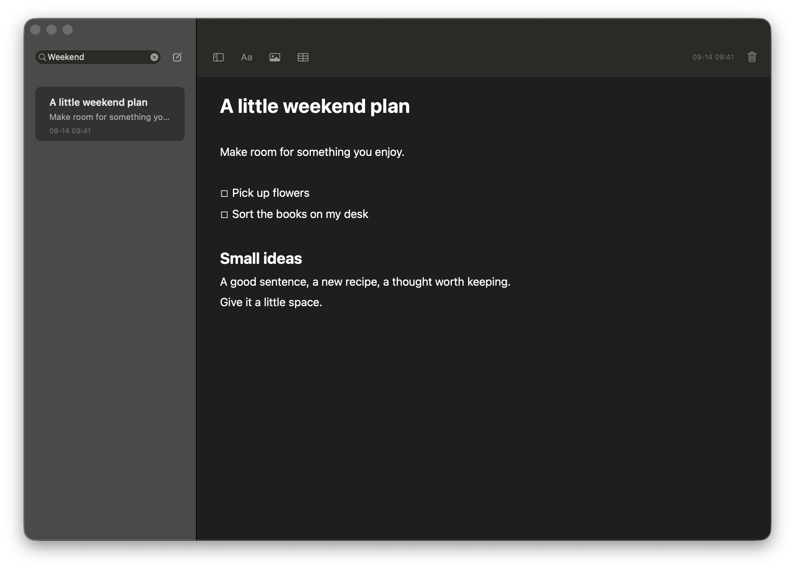

Stay with your thought.
Use familiar Markdown shortcuts and four heading levels. Type / to insert lists, checklists, images, and tables.
Made for macOS · MIT open source
A passing thought, or a purchase you just made.
Write a line. Find its time when you need it.

A NOTE. A PURCHASE. A MOMENT.
Jot down a purchase as you place the order. Later, click the line to check its latest edit time—one less detail to remember.
Click a line → see its time
Times reflect the latest edit, not a permanent order record. Editing a line updates its time.
Select a line. Hover or tap its time to see the full date.
Interactive illustration, not the running app.
LESS BETWEEN YOU AND YOUR WORDS
No workspace to choose. No mandatory title.
Return to your last note, or start one from the menu bar.



Actual app · Fictional notes
Use familiar Markdown shortcuts and four heading levels. Type / to insert lists, checklists, images, and tables.
Select text and format nearby. Drop in an image and scale it proportionally. Edit tables directly and check things off.
Click a line to see its latest edit time. A small clock takes over when the line is full. Hover for the complete date.
ALWAYS WITHIN REACH
Click the menu bar button, or press ⌃⌥N from another app to create a note.
Available while SwiftNote is runningFree · MIT
No account. No subscription. Just a small native memo app.
↓ Download for macOSThe app’s menus are currently in Chinese; English notes are supported. This release is not Apple-notarized. If macOS blocks the first launch, follow the installation guide. Installation & guide ↗